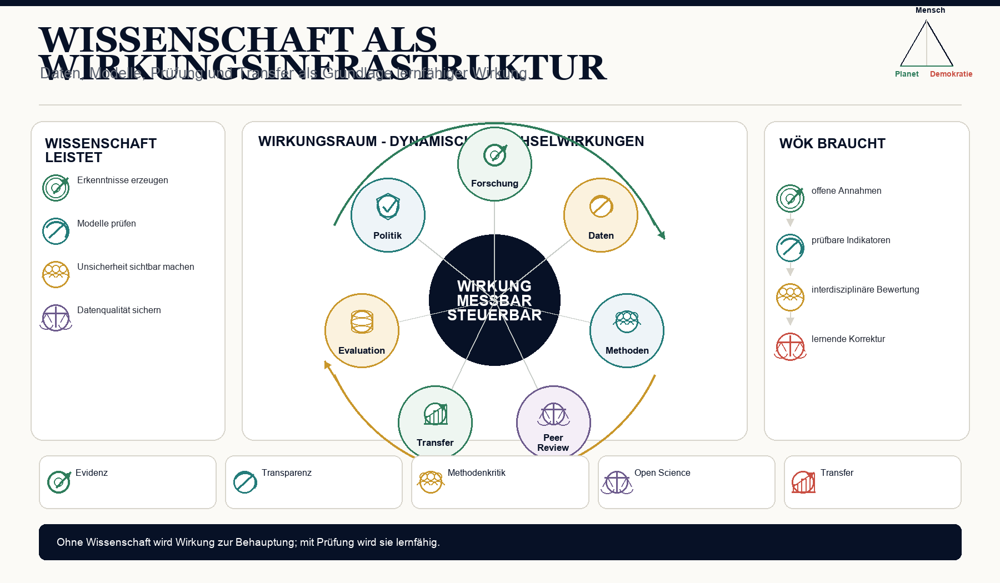

Leistung wird eng gemessen
Publikationen, Zitationen, Drittmittel, Rankings und Prestige zeigen nicht automatisch gesellschaftliche Wirkung oder Datenqualität.
 Wirkungsökonomie
Wirkungsökonomie
Für wen · Wissenschaft und Forschung
Wissenschaft ist nicht nur Wissensproduktion. Sie ist eine demokratische Wirkungsinfrastruktur.
Ohne unabhängige Forschung, belastbare Daten, replizierbare Methoden, öffentliche Statistik, Kritikfähigkeit und Unsicherheitssprache verliert eine Gesellschaft ihre Korrekturfähigkeit.
Die Wirkungsökonomie braucht Wissenschaft nicht als Dekoration, sondern als methodisches Rückgrat.
Warum diese Perspektive wichtig ist
Wissenschaft wird heute auf widersprüchliche Weise behandelt. Sie soll schnelle Antworten liefern, politische Legitimation schaffen, Innovation ermöglichen, Drittmittel einwerben, Rankings bedienen und öffentliche Debatten beruhigen.
Gleichzeitig wird sie angegriffen, instrumentalisiert oder als Meinung neben anderen Meinungen behandelt.
Die WÖk setzt anders an: Wissenschaft ist der Raum geprüfter Wirklichkeit. Sie liefert keine absolute Wahrheitshoheit, aber bessere Korrekturverfahren.
Was heute falsch läuft
Publikationen, Zitationen, Drittmittel, Rankings und Prestige zeigen nicht automatisch gesellschaftliche Wirkung oder Datenqualität.
Forschung kann exzellent wirken und trotzdem gesellschaftlich folgenlos bleiben.
Innovation kann neu sein und trotzdem negative Wirkung erzeugen.
Warum Reparatur nicht reicht
Publikationen, Zitationen und Drittmittel können wissenschaftliche Aktivität zeigen. Sie sagen aber nicht automatisch, welche Daten, Methoden, Korrekturverfahren und Erkenntnisse gesellschaftliche Entscheidungen verbessern.
Die WÖk versteht Wissenschaft als Wirkungsinfrastruktur: Forschung prüft Wirklichkeit, macht Unsicherheit sichtbar und schützt Korrekturfähigkeit.
WÖk-Verschiebung
Die WÖk fragt: Welche Forschung verändert welche Zustände? Welche Erkenntnis verbessert Entscheidungen? Welche Daten machen Risiken sichtbar? Welche Modelle helfen, Zielkonflikte zu verstehen?
Wissenschaft wird dadurch nicht nützlichkeitsverkürzt. Gerade Grundlagenforschung braucht Freiheit. Aber Forschungsförderung, Innovation und Politikberatung werden transparenter nach Wirkung, Unsicherheit, Risiko, Systemhebel und öffentlicher Relevanz gelesen.
Konkreter Gewinn
Was nicht passiert
Die WÖk macht Wissenschaft nicht zur Dienstleisterin der Politik.
Sie ersetzt Peer Review nicht durch Wirkungspunkte.
Wissenschaft liefert bessere Wirklichkeitsprüfung, keine Herrschaft über Werte.
Wirkungspfad
Konkretes Beispiel
Eine KI-Innovation kann Produktivität erhöhen. Wissenschaftlich reicht es nicht, Modellgenauigkeit oder Marktpotenzial zu messen. WÖk-Forschung fragt zusätzlich: Welche Arbeit verändert sich? Welche Bias-Risiken entstehen? Welche Energie- und Ressourcenwirkungen entstehen? Welche Machtverhältnisse werden verstärkt?
Visual
Drei Ebenen: Erkenntnis, Daten, Korrektur. Dazu Rückkopplung in Politik, Unternehmen, Gesundheit, Bildung, KI und Öffentlichkeit.

Vertiefung
Die nächste Frage lautet nicht, wie diese Zielgruppe nachhaltiger wird. Sie lautet: Welche alte Steuerungslogik erzeugt das Problem, und wie verändert Wirkung die Logik selbst?
Quellenbasis / Einordnung